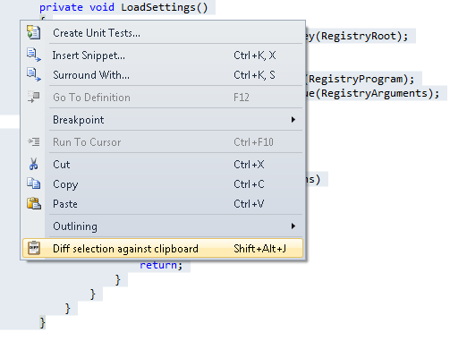
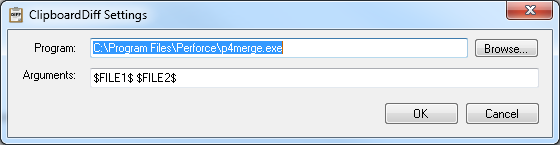

ClipboardDiff Visual Studio Extension
Posted: Last updated:tl;dr: I made a Visual Studio 2010 extension, ClipboardDiff, which lets you diff selected text against the contents of the clipboard. Get it in the Visual Studio Gallery.
At work I sometimes run into "evil twin" methods in our codebase. Those are methods that look almost exactly the same and where one has obviously been copy pasted from the other but then they have gotten out of sync over time. In these cases I try to refactor the two methods into one and add parameters for any behaviour that was different in the two original methods. But it can be hard to tell exactly what has changed between the two methods, especially when they are dozens of lines each. When dealing with this I used to copy each of the methods into their own temp file and then run a diff tool on them. After doing this a few times I got annoyed at the process, and decided to automate it somehow.
I've been playing around with Visual Studio extensions a lot lately and so I decided to make one for this problem. The extension is called ClipboardDiff and is now available in the Visual Studio Gallery. The idea is that you copy the first part of text you want to compare, then you select the next part you want to compare and then run the command "Diff selection against clipboard". The command is available by right clicking on the selected text, it's at the bottom of the context menu, or you can invoke it with they keyboard combination Alt+Shift+J. If you want to bind it to another keyboard combination just go into Tools->Customize->Keyboard and search for "ClipboardDiff", it'll find the command.

You can self choose which diff tool to use, to configure it go to Tools->ClipboardDiff settings and there you can enter the path to your diff tool of choice, and the arguments you want to pass to it. The placeholder values $FILE1$ and $FILE2$ will be replaced by the temp file names once you invoke the diff command. ClipboardDiff knows the default locations of a few diff programs, so if you have Perforce Merge, Tortoise Diff or WinMerge installed you won't have to configure anything (Those are just the tools I happened to have installed on my machine). If you haven't configured which tool to use the Settings window will be opened the first time you try to run a diff.

You can download the extension in the Visual Studio Gallery and the source is licensed under the MIT license and available on Github at https://github.com/einaregilsson/ClipboardDiff. Enjoy!